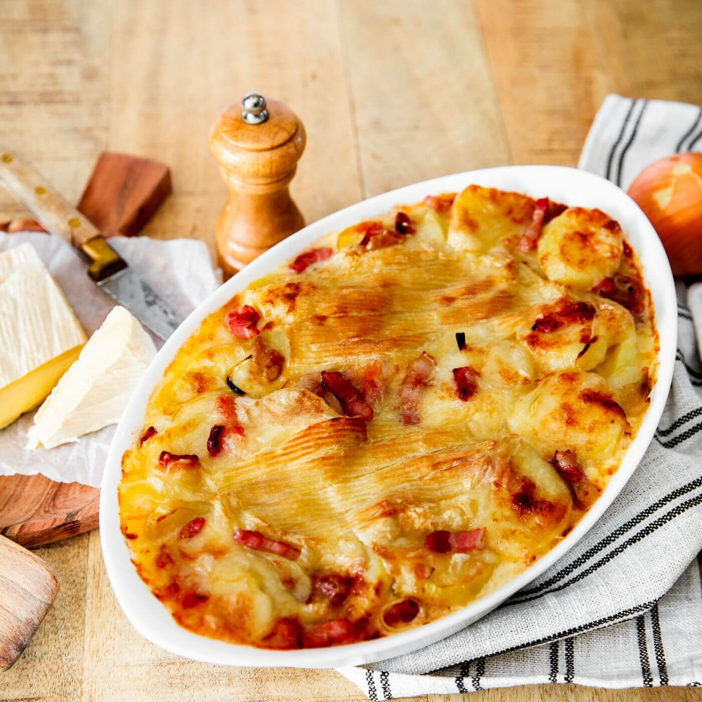

tartiflette

Description :
dish of potatoes and cheese oven-baked
Ingredients :
- 1.2kg potato peeled, cut into cubes or chunk
-
1 whole Reblochon cheese wheel or 1 ½ if you like the dish very creamy
- 400 gr bacon diced
- 2 large onion diced
- 120 ml dry white wine ½ cup (optional)
- salt
- pepper freshly ground
- NO CREAM !!
Steps :
-
Start by preparing all ingredients. Peel and dice onions. Peel potatoes.
Throw them in a bowl with cold water as you go. Dry potatoes and cut
them into small cubes or chunk (the smallest pieces are, the quickest
the cooking time will be).
-
In a frying pan or a skillet, heat neutral oil (such as peanut oil, not
olive oil as it is too strong in taste). Throw in onions and let them
fry for 5 min, adding salt (this way vegetation water will evade from
onions and they won't burn). Pour in potatoes. At first brown them
(adding fat if necessary) and cover until almost cook. The cooking time
depends on the size of cubes or chunks, roughly 30 minutes.
-
Preheat oven to 180°C - 350°F. Cut cheese into 4 equal parts then each
piece into 2 in thickness.
-
At the very end of the potatoes cooking process, add bacon and white
wine (optional). Stir and immediately pour into a baking dish. Arrange
over the pieces of Reblochon cheese, cut side against potatoes, crust on
top (as pictured below).
-
Bake for about 15minutes until cheese melts. Make sure to remove from
the oven when cheese becomes nicely melted and runny. Heated too long
cheese will split, to reveal only its fat and lose its delicious creamy
texture.